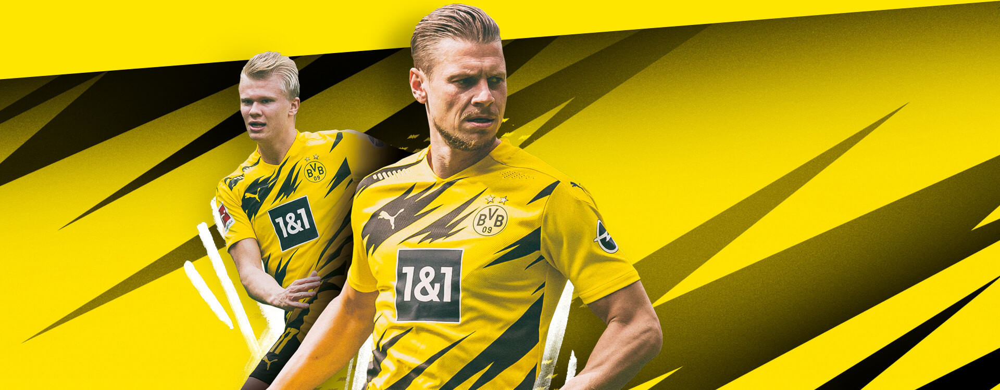

Нова форма Боруссії Дортмунд на сезон 20-21
Нова домашня форма «Боруссії Дортмунд» 2020-2021 традиційно має чорно-жовте поєднання кольорів. На цей раз, візерунок, що прикрашає форму, представлений у вигляді зигзагів. Замість звичного логотипу Evonik на формі розміщена емблема нового титульного спонсора компанії 1&1 IONOS - веб-хостингової компанії. Емблема нового спонсора буде використовуватися тільки в матчах Бундесліги, а в єврокубках на формі як і раніше буде логотип Evonik.
Останні новини клубу
Усі нові події в команді Ви можете знайти за цим посиланням
Розіграш нової форми Боруссії Дортмунд!
Для участі в розіграшу заповніть форму нижче